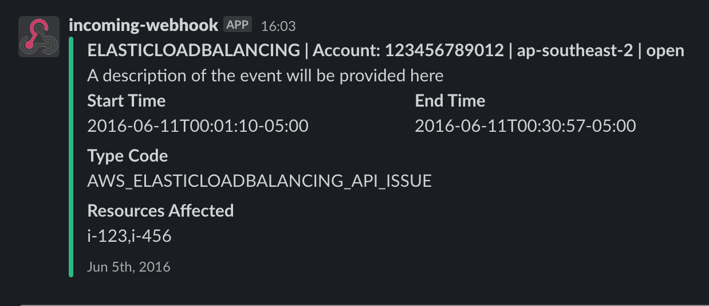

awshealth-to-slack
Usage
There are three required environment variables needed to pass into the docker container during run.
| Name | Value |
|---|---|
| SLACK_WEBHOOK_URL | The incoming webhook url for your slack workspace |
| LOCALE | The locale of the language that should be posted. AWS usually sends multiple translations on an event |
| TZ | timedatectl list-timezones selection of timezones |
To execute the container a command like the following can be used:
docker run -rm \
-e TZ=America/Chicago \
-e LOCALE=en_US \
-e SLACK_WEBHOOK_URL=<slack webhook> \
-p 9000:8080 \
ghcr.io/jmoney/awshealth-to-slack:latest
NOTE: To run this lambda in AWS one needs to copy copy the released image from github packages to a private ECR that lambda has permissions to read.
Run locally
docker-compose up --build
Will build and start the docker container. You can use any of the example payloads.
curl -s "http://localhost:9000/2015-03-31/functions/function/invocations" -d @samples/example_ELB.json | jq .
Test integration with slack
If you want to see how it integrates with slack create an Incoming Webhook. Then in the docker-compose.yml set the incoming webhook url to the SLACK_WEBHOOK_URL environment variable.
Example Post
